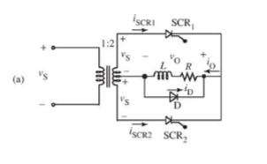

Retificador Monofásico Controlado com Terminal Central
Um retificador monofásico controlado com terminal central e carga resistiva possui controle de fase tanto na parte positiva quanto na negativa da alimentação AC, o que resulta no aumento da tensão DC e na redução da ondulação quando comparado ao retificador de meia onda.
Durante o semiciclo positivo da tensão de entrada, SCR1 fica diretamente polarizado. Se um sinal for aplicado à porta (alpha), SCR1 entrará no estado ligado. A corrente na carga (i0 = v0/R) assume a mesma forma de onda da tensão na carga. Quando a corrente se tornar nula (pi), o SCR irá desligar naturalmente.
Durante o semiciclo negativo, o SCR2 ficará diretamente polarizado, com isso a Tensão de saída e a corrente voltam a fluir pelo sistema, até que a corrente chegue a zero (2pi), repetindo o ciclo.

Com carga indutiva, ao considerar uma carga indutiva elevada, na qual a corrente é contínua (um cenário sempre presente), o SCR1 conduz durante 180°, de (alpha) a (pi + alpha), fazendo com que a tensão na carga siga a tensão de entrada. Ao término do ciclo do SCR1, SCR2 é acionado, desativando o SCR1 e tornando-se condutor durante 180° de (pi + alpha) a (2pi + alpha).
Um diodo de retorno, conectado em paralelo com carga indutiva, altera as formas de onda de tensão e corrente da figura abaixo. Quando a tensão na carga tende a ser negativa, o FWD fica diretamente polarizado e inicia a condução. Dessa forma, a tensão na carga fica grampeada a zero volts. A corrente quase constante na carga é mantida pela corrente de retorno que passa através do diodo de retorno.
